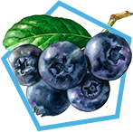
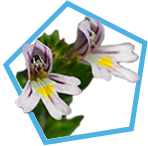
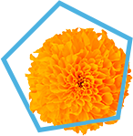
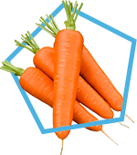
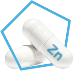
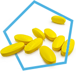

повышает эластичность глазных капилляров, укрепляет стенки сосудов, стимулирует приток
крови к сетчатке глаза. Способствует уменьшению усталости глаз, увеличивает поле зрения
и улучшает зрение в условиях сумерек.

повышает остроту зрения за счет устранения отеков в тканях глаза, способствует оттоку
жидкости и нормализации внутриглазного давления.

Проявляет антиоксидантное действие, а также предупреждает развитие некоторых заболеваний глаз.
является одним из основных пигментов, защищающих глаза от фото- повреждений.

биологически активное вещество, обладающее мощным антиоксидантным воздействием, и одновременно является источником витамина А (его провитамин). С этого вещества образуется зрительный пигмент родопсин, который отвечает за зрение в темноте.

участвует в обмене витамина А, препятствует образованию свободных радикалов, вредных для сетчатки глаза. Содержится в сетевой, сосудистой и радужной оболочке глаза.

(В1, В6, В12) благоприятно влияют на центральную нервную и сердечно- сосудистую системы, выступают в качестве мощных неспецифических фармако- динамических средств и выполняют важнейшие функции в организме, улучшают метаболизм в тканях оптической системы глаза.